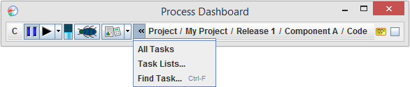
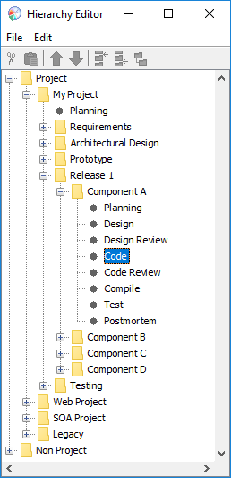
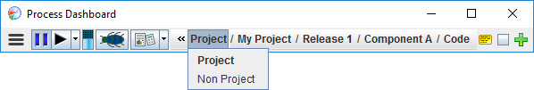
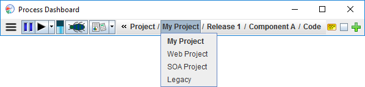
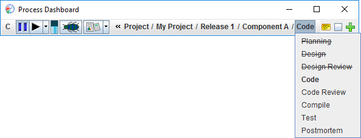
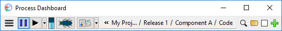
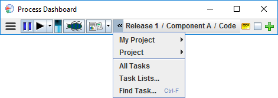
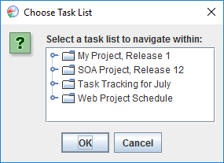
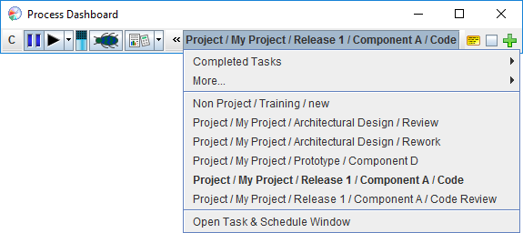
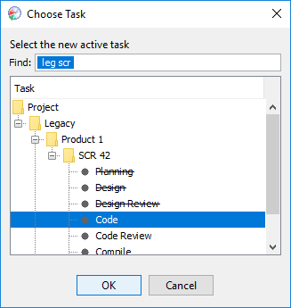

As you work, the dashboard maintains a concept of the currently active task. This task is displayed in the middle of the Process Dashboard toolbar. Items such as the play/pause button, the defect button, the script button and the completion checkbox always operate against this active task. The image below shows the dashboard ready to work on the Code phase of "Component A," which is part of "Release 1" in "My Project".
You can click on the name of the active task to change it. You can also click on the "overflow menu" to the left of the task name for more options. For convenience, this overflow menu provides two different "task selection styles" you can use. To move betweeen tasks in chronological order, click on the "Task Lists" option. To select tasks hierarchically (the default), click on the "All Tasks" option.

By default, the dashboard uses the hierarchical task selection style. To better illustrate how this style works, the following example set of projects will be used.

This project hierarchy shows two top level project categories: "Project" and "Non Project". These are the two categories given as default when the dashboard is first run. Under "Project" there are four items defined: "My Project", "Web Project", "SOA Project", and "Legacy". Under "My Project", several items are defined, including "Release 1". "Release 1" has four subtasks, called "Component A" through "Component D". In this screenshot, only "Component A" has been expanded to show its phases. Phases are added into the project hierarchy as children of a project. "Component A" was created from a PSP2.1 template, and so it has all the development phases of a PSP2.1 project.
Back on the dashboard itself, if you click on the first element in the active task name, it will show all the entries in the project hierarchy that are defined at that level. In this case it shows the two default nodes "Project" and "Non Project".

Selecting the second name element shows the entries defined at that level under the selection from the first menu. In this case, the user has selected "Project" on the first menu, so the second menu shows the children of "Project" in the project hierarchy.

Clicking any task name element will display the hierarchical children of the component or task to the left. This final example shows the PSP 2.1 process phases that are defined for "Component A".

To help you keep track which tasks have marked complete, the task selector menus use a strikethrough font. (In the image above, the "Planning," "Design," and "Design Review" tasks have been marked complete.) You can mark an item complete with the completion checkbox.
If your work hierarchy is deep and complex, there may not be enough horizontal space to display the full name of the active task. In that case, the dashboard will display as much of the task as will fit. (If you would like to see more of the task name, just resize the dashboard window to be bigger.)

If you hover over a truncated name, a tool tip will tell you the full name. You can click the overflow menu to display the name elements that were dropped, and select different components at that level:

As you accumulate more projects and more tasks in your personal dashboard, the menu of choices under a particular item can potentially grow very long. To reduce clutter, the dashboard will identify projects and tasks that you completed some time ago, and move them to a submenu called "Older Completed Items." (You can configure this behavior in the Preferences Editor.)

If you are actively working on a project, you may find that you spend most of your time working on tasks that are in a particular earned value task list. A special task selection style makes this easy. Just click on the task selection overflow menu and choose "Task Lists..." A window will ask you for the name of the task list for the project that you are working on.

Select the task list that you are working on, and click OK. (If you know you will only be working on a subset of a particular task list, you can drill down into the task list and select the portion you plan to work on.) The active task selector will now display a single menu which lists tasks in chronological order (as defined in the flat view of the earned value schedule).

If you are splitting your time between several projects, you can still use this approach to select tasks (across several projects) in roughly chronological order. Just create an EV rollup of the projects you are working on; then use this approach to navigate within that task list.
For more information on creating earned value schedules, and using the flat view of their task lists, see the Creating a schedule step by step help topic.
Often you may have a specific task in mind that you would like to work on. Just click on the "Find Task" icon that appears to the right of the active task name. This will display a window of tasks (either from the hierarchy or from the current task list, depending on the current task selection style).

As you type in the "Find" box, the list of selections will automatically be narrowed to show tasks containing all of the letters you've typed. Capitalization is not important, and you can enter multiple filters separated by spaces. In the example above, the user has typed "leg scr". The first filter "leg" has narrowed the tree to show tasks under the "Legacy" portion of the hierarchy. The second filter "scr" has further narrowed the list to show Tasks with the letters "scr" in the name. (The end result is that "leg scr" has narrowed the list to show tasks associated with legacy software change requests.) You can collapse branches of the tree that correspond to old, inactive projects; collapsed branches will not match the search filter.
You can press the up and down arrow keys to select a specific task, and press the Enter key to change to the highlighted task. In addition, you can click directly on a task to activate it.